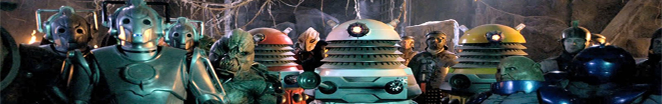
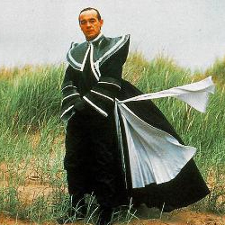

| Home | The Doctors | The Villains | |
|  | |||
|
The Valeyard is a fictional character from the long-running British science fiction television series, Doctor Who. He is described by the Master as an amalgamation of the Doctor's darker sides from between his twelfth and final incarnations. In the serial The Trial of a Time Lord, comprising the whole of Season 23 of the series, the High Council of the Time Lords appoint the Valeyard as prosecutor at the Sixth Doctor's trial, hoping to have him executed and thereby remove the sole witness to their near-destruction of life on Earth. The Valeyard appears in all four segments of the 1986 serial The Trial of a Time Lord — The Mysterious Planet, Mindwarp, Terror of the Vervoids and The Ultimate Foe. In episode 4 of The Mysterious Planet it is stated that "valeyard" means "learned court prosecutor" in their language, although the term is obsolete and highly obscure. |